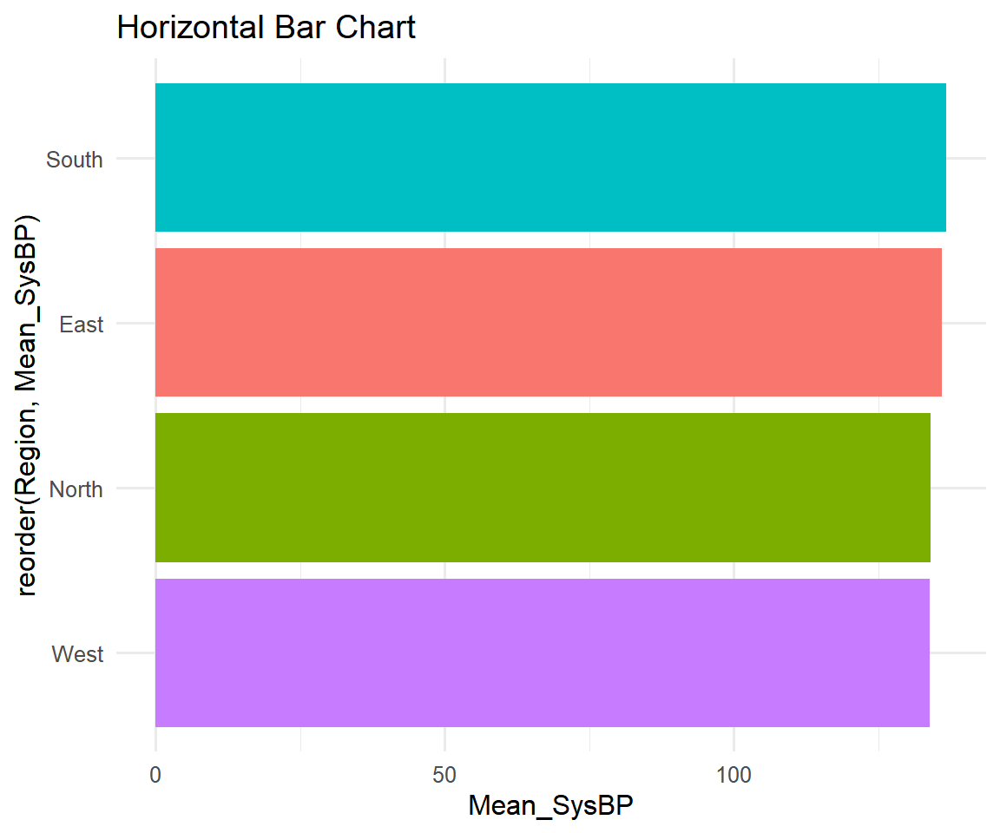

This Module (FINAL): - Complex visualizations with progressive builds - Advanced composition techniques - Exporting and reproducibility - Limitations of ggplot2 - Best practices and common pitfalls - Workshop summary
Useful for: Long category names, horizontal bar charts

Section 3: Exporting & Reproducibility
ggsave(): Saving Plots
Code
# Create a plotmy_plot <-ggplot(bp_data, aes(x = Age, y = SysBP_0m, color = TreatmentGroup)) +geom_point() +theme_minimal()# Save the plotggsave(filename ="blood_pressure_analysis.png",plot = my_plot,width =10, height =6, units ="in",dpi =300)
filename: File path and name with extension
plot: ggplot object (defaults to last plot displayed)
Scales control how data maps to aesthetics - customize breaks, limits, labels
Facets enable small multiples for comparing groups
Consistency is key - use global themes and organizational standards
Know ggplot2’s limitations and when to use alternatives
What We Covered Across All Modules
Module 1: Foundations & Basic Geoms - Seven layers of Grammar of Graphics - Essential geoms: point, line, col, bar, histogram, boxplot, violin, smooth, density, jitter - Data preparation and handling missing data
Module 2: Aesthetics, Faceting & Themes - Global vs local aesthetics - facet_wrap() and facet_grid() - Built-in themes and ggthemes package
Module 3: Colors, Scales & Custom Themes - Color palettes and accessibility (viridis, ColorBrewer, paletteer) - Scale functions (manual, gradient, continuous, discrete) - Custom theme creation with element functions
Module 4: Advanced Topics & Best Practices - Complex visualizations and progressive builds - Exporting and reproducibility - Limitations and alternatives - Best practices and common pitfalls
Resources for Further Learning
Books: - “ggplot2: Elegant Graphics for Data Analysis” by Hadley Wickham - “R Graphics Cookbook” by Winston Chang - “Fundamentals of Data Visualization” by Claus O. Wilke
Online Resources: - Official documentation: https://ggplot2.tidyverse.org/ - R Graph Gallery: https://r-graph-gallery.com/ - ggplot2 extensions: https://exts.ggplot2.tidyverse.org/ - Tidyverse style guide: https://style.tidyverse.org/
Cheat Sheets: - RStudio ggplot2 cheat sheet - Data visualization with ggplot2 cheat sheet